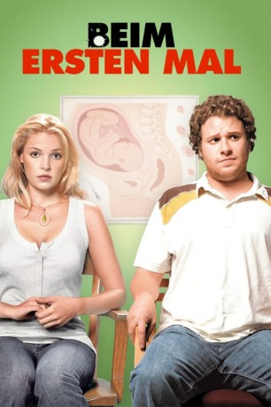

#1140 Beim ersten Mal
Alternativ: Knocked Up
 
 IMDB-Wertung: 7.0 / 10
IMDB-Wertung: 7.0 / 10  Metascore: 85
Metascore: 85 
Die erfolgreiche und hübsche Alison landet nach einem Barbesuch im Bett des arbeitslosen Slackers Ben, der gerade eine Webseite mit Promi-Nacktszenen starten will. Das Ergebnis des One-Night-Stands erfährt sie acht Wochen später: Sie ist schwanger, entscheidet sich für das Kind und setzt sich mit Ben in Verbindung, der aus allen Wolken fällt. Schließlich versuchen es beide dem Baby zuliebe mit einer Beziehung, und die Probleme beginnen.
Jahr: 2007
Dauer: 129 Minuten
FSK: 12
Land: USA Studio: Universal PicturesTonspuren: DTS - ,
Untertitel: Deutsch,
Auflösung: 1080p (1920x1040) Größe: 10956 MB
Genre: Komödie, Liebe
Regisseur: Judd Apatow
Drehbuch: Judd Apatow
Soundtrack: Joe Henry, Loudon Wainwright III
Darsteller:
Datei: X:\2007(A-F)\Beim ersten Mal (2007, FSK12, 1920x1040).mkv seit 29.05.2015
Festplatte: HD 2007(A-Z)-2008(A-F)
 Es gibt insgesamt 65 Filme in der Gruppe '2007(A-F)'
Es gibt insgesamt 65 Filme in der Gruppe '2007(A-F)'